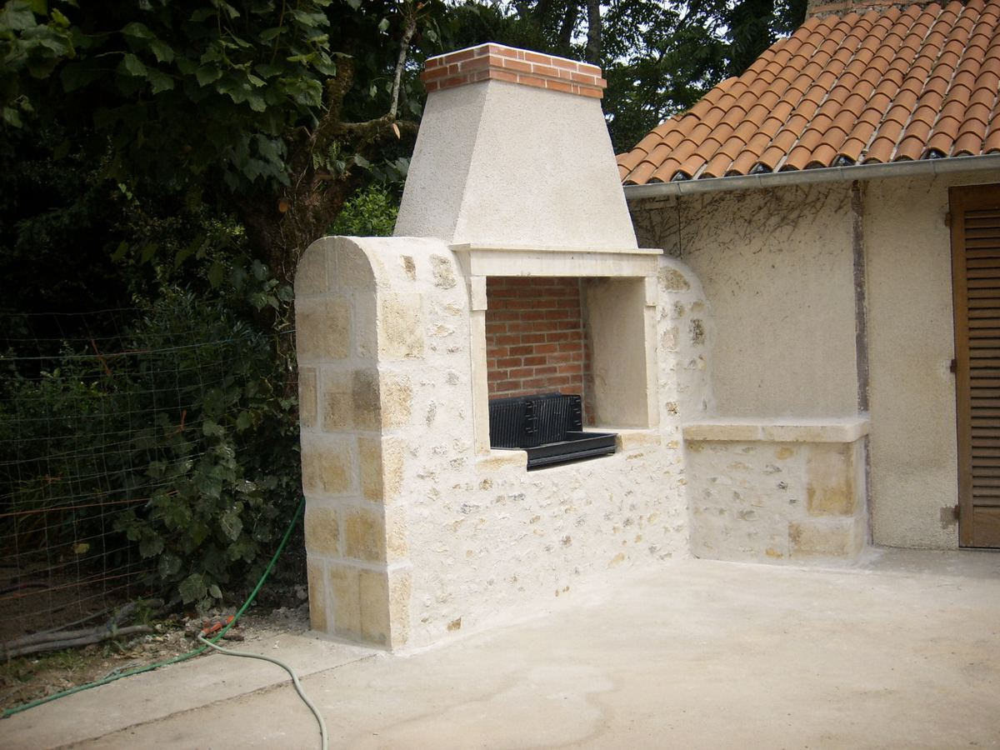
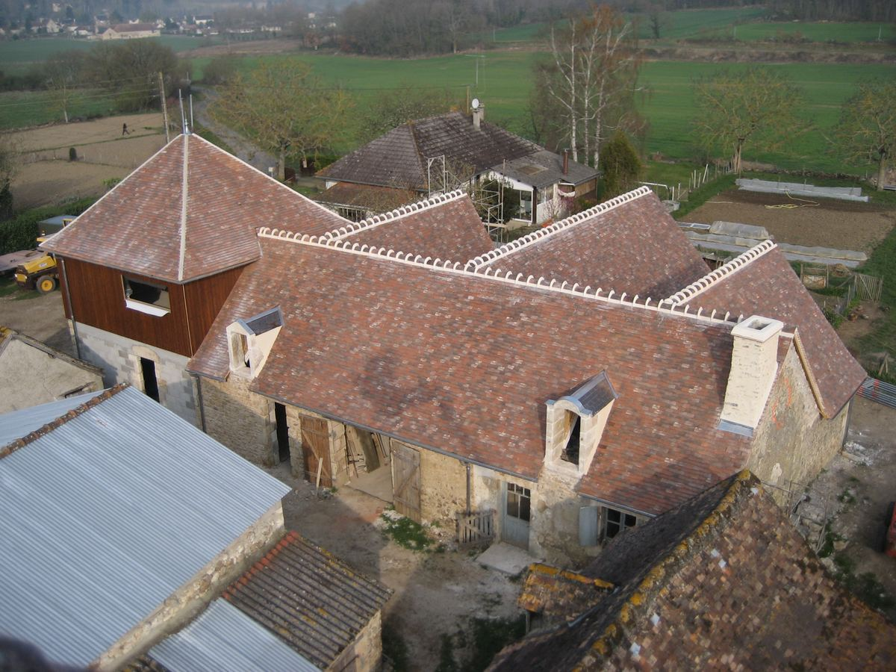
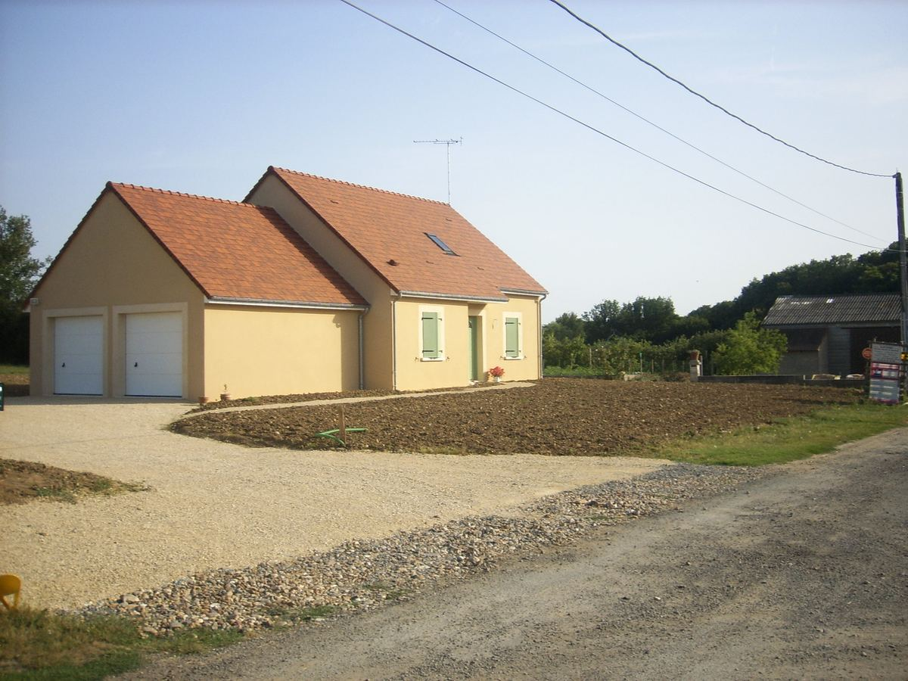
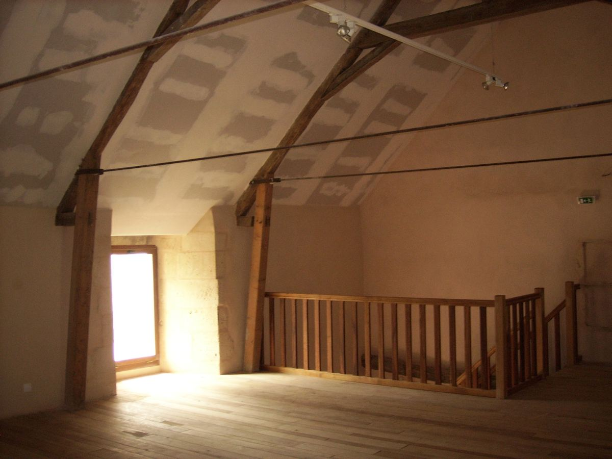
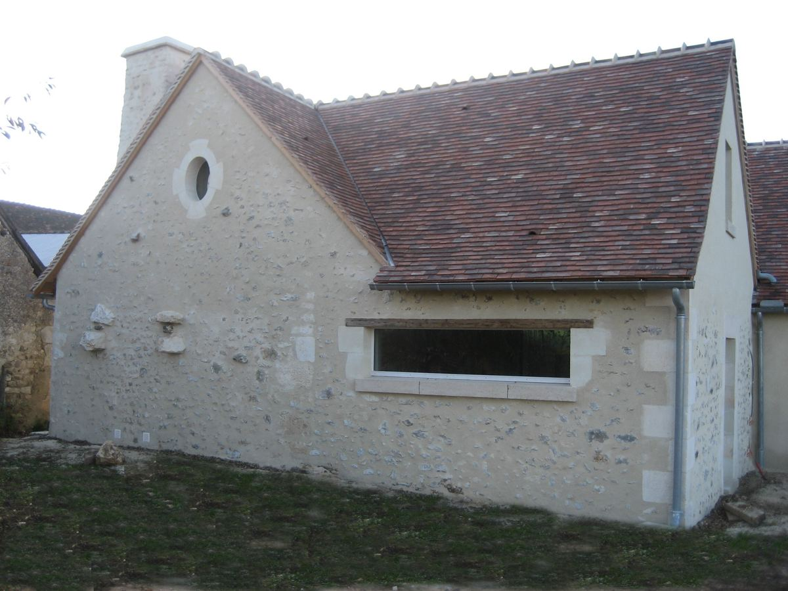
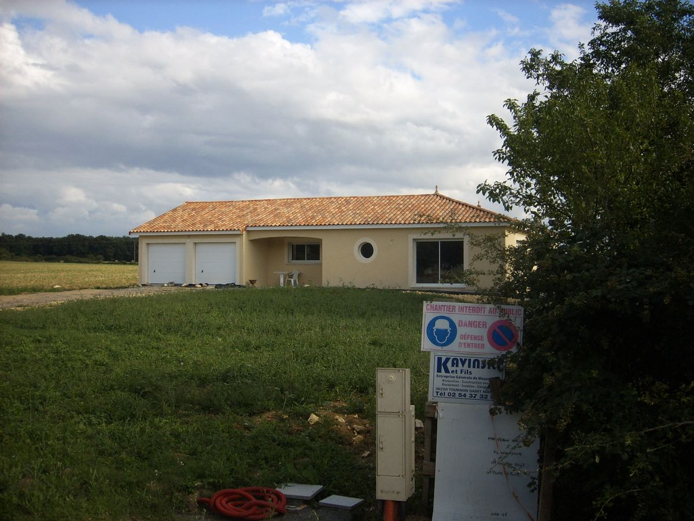
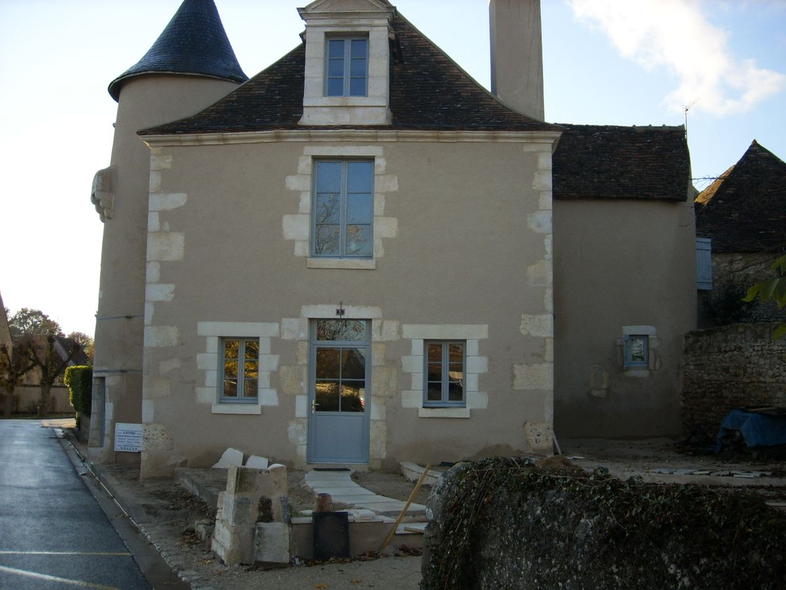

Construction neuve, rénovation et gros œuvre. Plus de 40 ans de savoir-faire artisanal au service de vos projets à Tournon-Saint-Martin et dans toute la Brenne.
Kavinski et Fils intervient sur tous vos travaux de maçonnerie, de la construction neuve à la rénovation complète.
Maisons individuelles, bâtiments agricoles, dépendances. Gros œuvre complet : fondations, élévation de murs, dalles et planchers.
Rénovation intérieure et extérieure, reprise de maçonnerie, ouvertures, agrandissements. Respect du bâti existant.
Fondations, murs porteurs, planchers, charpente béton. L'ossature solide de votre projet, du terrassement à la mise hors d'eau.
Terrasses, allées, murets, barbecues en pierre, clôtures et portails. Des espaces extérieurs sur mesure.
Enduits traditionnels et monocouches, ravalement de façade, joints de pierre. Finitions soignées pour un rendu impeccable.
Carrelage, chapes, plâtrerie, cloisons. Coordination complète de votre chantier du gros œuvre aux finitions.
Un aperçu de nos chantiers dans l'Indre et le sud du Berry.







Fondée en 1981 à Sançais, l'entreprise Kavinski et Fils est spécialisée dans la maçonnerie générale et le gros œuvre de bâtiment. Depuis plus de quatre décennies, nous mettons notre expérience au service des particuliers et des professionnels de l'Indre.
Certifiée Qualibat et couverte par la garantie décennale, notre équipe intervient sur des chantiers de construction neuve comme de rénovation, avec le souci permanent de la qualité et du respect des délais.
Nous intervenons à Tournon-Saint-Martin et dans tout le sud de l'Indre : Le Blanc, Châtillon-sur-Indre, Buzançais, Argenton-sur-Creuse et les communes environnantes.
Devis gratuit et sans engagement. Nous intervenons dans toute la Brenne et le sud de l'Indre.
Sançais
36220 Tournon-Saint-Martin